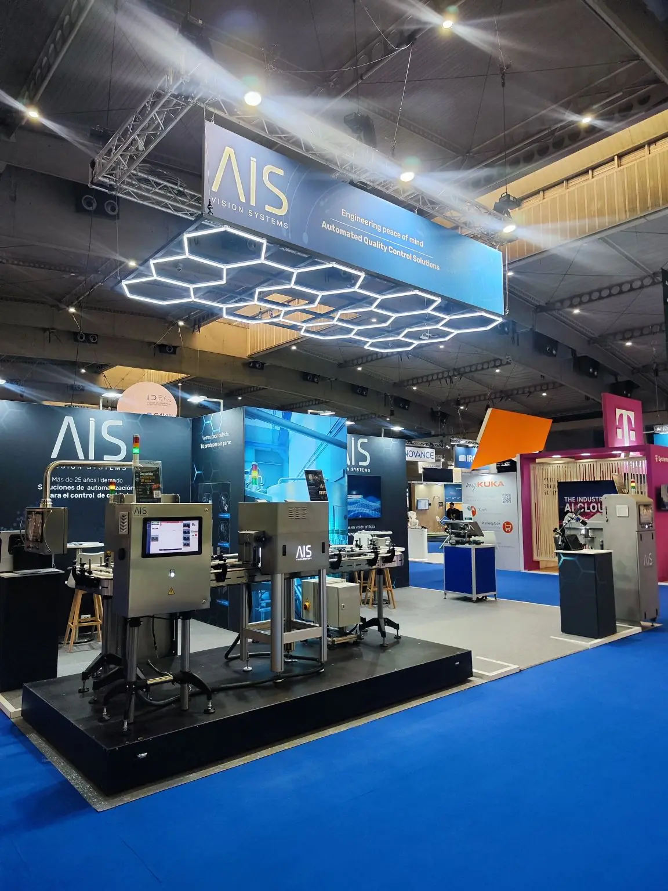
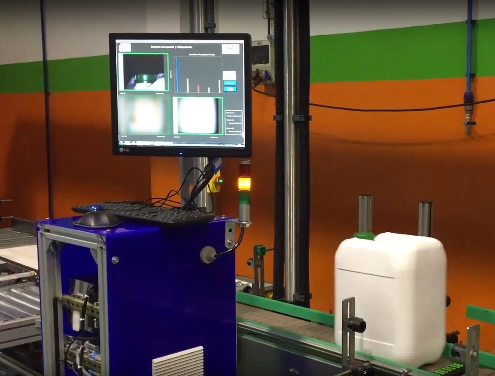
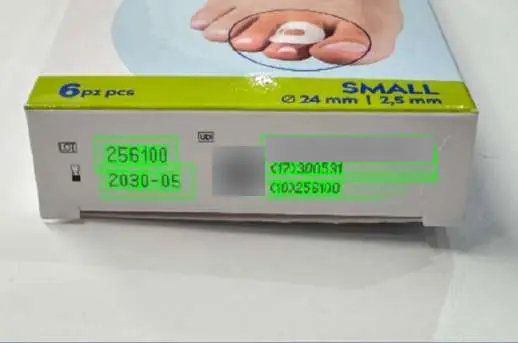
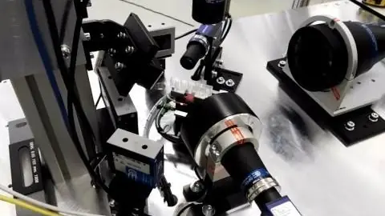
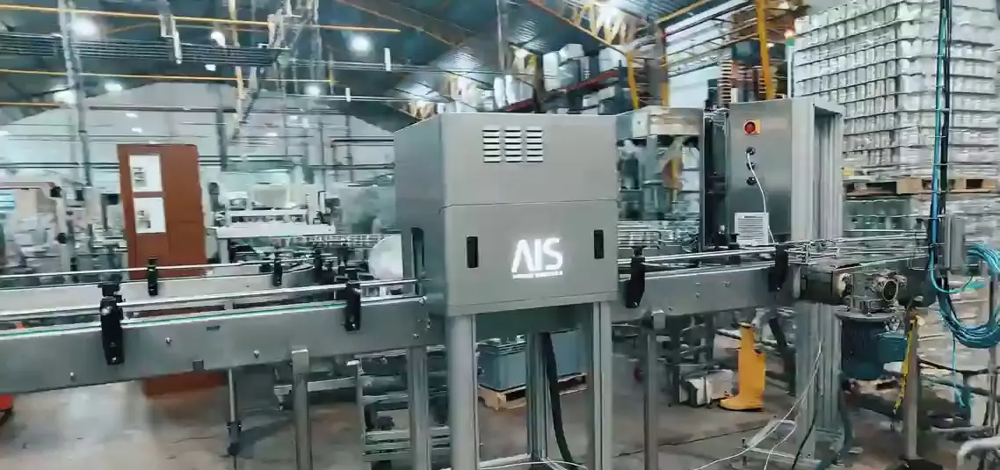
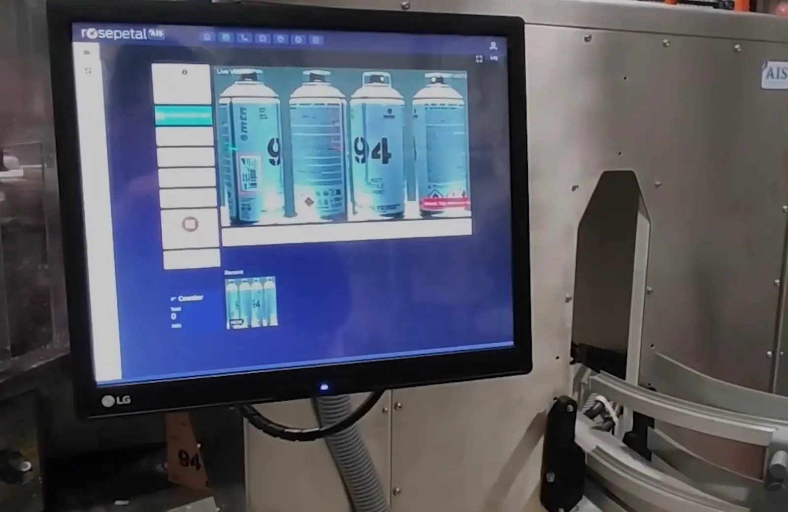
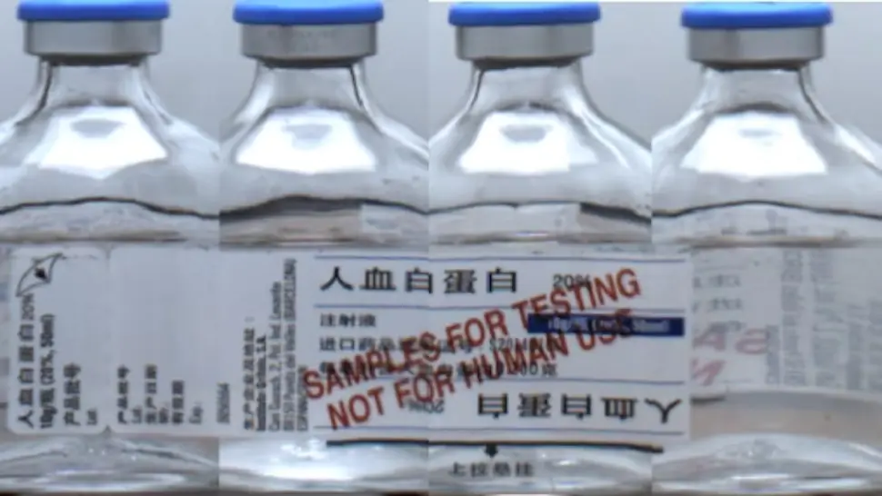
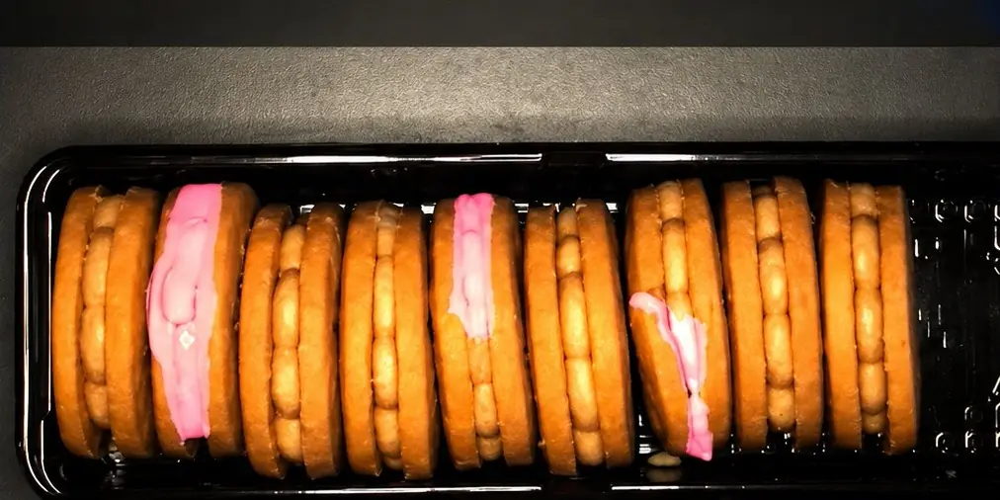

Engineering
peace of mind
peace of mind
Automated quality control
01
Quiénes somos
AIS Group
Irlanda
Automatic Identification Systems
Impresión y aplicación de etiquetas
Lectura de códigos
Visión artificial
Países Bajos
AIS Scanology
Lectura de códigos
Verificación de códigos
Visión artificial
Irlanda
AIS Vision Automation
Automatización en línea
Robótica
Transporte
España
Rosepetal
Plataforma de software
Entrenamiento de modelos de IA
Control de calidad industrial
5
Líneas de producto

Impresión y aplicación de etiquetas

Visión artificial

Impresión y marcaje

Impresión de etiquetas

Verificación de códigos

Trazabilidad y captura de datos
10
02
Cómo trabajamos
Proceso de trabajo

1
Preventa
Necesidades, diversas preguntas, pruebas y oferta

2
Ejecución del proyecto
Jefe de proyecto, estudio de integración, etapas, cierre

3
Posventa
Mantenimiento, ampliaciones y mejoras, asistencia

4
Responsable de cuenta
Nuevos proyectos en clientes existentes
12
Pruebas de laboratorio
Realizamos pruebas con muestras reales para validar la solución.
Informe técnico de las pruebas de laboratorio
Determina el hardware necesario para el proyecto
Se requieren muestras reales de producto

14
03
Referencias
Referencias en bebidas


24
Referencias en industria


25
04
Soluciones y productos
Procesamiento y operación
Procesador: cámaras inteligentes (smart cameras) o procesadores que analizan las imágenes y se comunican con otros dispositivos
Software: criterios de análisis y decisión; interacción usuario-máquina
Pantalla: sin ella, no ves

33
Software a medida y trazabilidad
VerifAIS: informes en PDF para cualquier verificador de LVS, con el logo del cliente
SerialBox: estuches serializados, sin números repetidos ni fuera de la base de datos
TrazAIS: identificación unitaria y agrupamiento, de la unidad al palé
AIS Control: la eficiencia de la planta de producción, en gráficos

39
AIS REV 360
Control de botellas y viales con IA.
Envases
Botellas con cualquier geometría
Rechazo
Expulsor opcional para producto no conforme


47
05
Proyectos a medida
Proyecto a medida replicable
Muy alta cadencia: hasta 1500 uds./min.
Rechazo
Expulsor opcional para producto no conforme
Sectores
Alimentación: galletas, pan, bollería


Grieta

Rotura
56

Gracias
Web
www.aisvision.com
Teléfono
+34 931 003 035
LinkedIn
AIS Vision Systems
YouTube
AIS Vision Systems